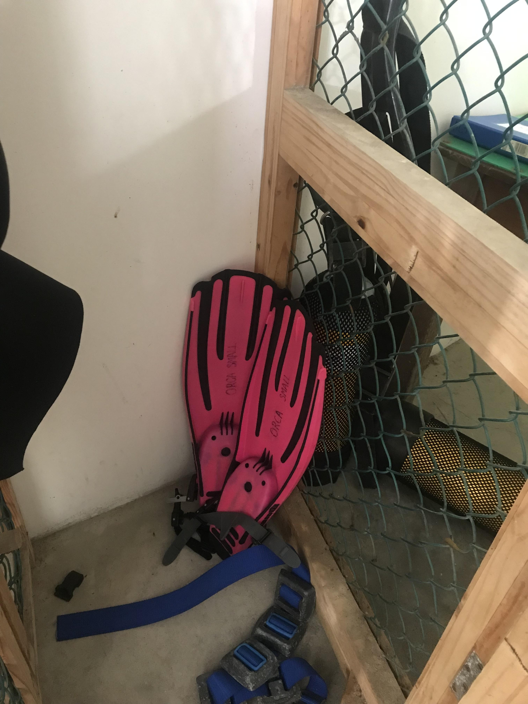
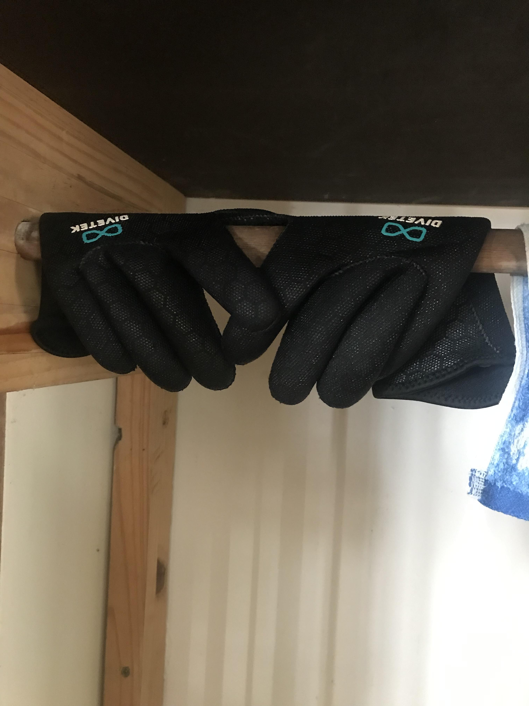

11 Feed
11.1 Feed procurement
The Aquarium procures an annual consignment of \(\pm\) 5400 kg of feed, usually consisting of \(\frac{2}{3}\) hake and \(\frac{1}{3}\) squid, for the display animal’s. While other commercial feed supply companies can be used (e.g., Erongo marine enterprises and Seawork fish processors), Namsov fishing enterprises and Tunacor are the preferred suppliers because they have proven to be the cheapest and most reliable options.
The availability of squid varies annually.
11.1.1 Order the feed
Because this is a high value procurement (\(\pm\) N$85 000), the RFQ procedure usually has to be followed (Section ???) before feed can be obtained.
11.1.2 Feed collection
Since fish can not be kept fresh for long periods of time, the feed is only collected every 8-10 weeks in 900kg batches. These are supplied as either 30 x 30kg boxes (Figure 11.1 (a)), containing 3 x 10 kg slabs each, or as 90 x 10 kg boxes that are not subdivided (Figure 11.1 (b)).
Only one technical member of staff is required to collect the feed.
- One of the supplier’s operators will contact an Aquarium research technician, to provide an estimated time of arrival for the fresh feed at Namport.
- Book the Cruiser for that day (Section ???).
- Send the vehicle’s licence plate number, as well as the name and ID number of the person collecting the feed, to the operator.
- Make sure you have your Port access card (Section ???).
- Drive to the Commercial harbour (Section ???) and park next to the freezer units at the wet docks (pic).
- If there is no space available, you may have to stop at the car park found on the left hand side of the final entrance blockade, before the Commercial ship docks.
- Report to the wet docks control office and give the operators the vehicle registration number.
- The office can be found on the first floor, up the stairs to the right, immediately after entering the freezer unit.
- Ask one of the employees inside the freezer unit for directions, if you can not find the control office.
- Go back down to the car
- Wait for the order to be prepared and carted out to you.
- Verify that the number of boxes brought out, match the number ordered.
- Sign the receipt.
- The employees stationed in that area will help load the boxes onto the back of the Cruiser.
- Leave the Commercial harbour.
- Visit the nearest service station and fill the cars tyres back up to 2.4 bar.
- The added weight might significantly decrease the tyre pressure.
- Drive back to the Aquarium.
11.1.3 Feed packing
- Park next to the rear entrance (Figure 11.2 (a)).
- Large double door entrance between the Quarantine area and the ocean.
- Bring the Aquarium’s trolley cart to the rear entrance (Figure 11.2 (b)).
- The trolley is kept behind the two small, deep fridges in the Aquarium section underneath the Auditorium.
- Off load and pack a fraction of the total boxes onto the trolley.
- Push the loaded trolley to the Aquarium Freezer (Figure 11.2 (c)).
- Kept at approximately -25\(^\circ\)C.
- Open the Freezer door and pack the boxes into the Freezer.
The freezer can be found on the Aquarium’s ground floor, directly beneath the Feed room.
Repeat steps 16 - 19 until all the boxes of feed have been packed into the Freezer.
- Indicate the amount and type of feed packed into the Freezer room on the Feed log sheet (Figure 11.3 (a)).
- Kept in the Feed preparation room/“Feed room” (Nr. 171), located to the left of the Main tanks top section on the Aquarium’s top floor (Figure 11.3 (b)).
- Follow the vehicle return procedure (Section ???).
11.2 Animal feeding
All animals kept in captivity have to be fed regularly to guarantee their well being. In the Aquarium, this is done by either the Technical assistants or by divers (volunteers or Aquarium technicians). Feeding occurs everyday at 15h00, without exception.
11.2.1 By Technical assistants
The Technical assistants are responsible for preparing the feed everyday. They also hand feed the animals from the tops of their respective display tanks everyday except Tuesdays, Saturdays and Sundays, if a diver is available.
Only one Technical assistant is required to prepare the feed and to feed the animals per day.
Tools
Most of the tools required can be found in the Feed room (Section ???), in the Workshop (Nr. 162) or Diver preparation area (Section ???).
These include:
- 1 x Apron.
- 1 x Pair of rubber gloves.
- 1 x Wooden cutting board (Figure 11.4 (a)).
- 1 x Sharp knife.
- 2 x Round bucket.
- 1 x Modified divers bucket (Figure 11.7).
- Has a rubber cover, with a slit opening cut through its center, clamped over the top of the bucket and a rubber cover clamped over the bottom of the bucket.
- 1 x Feed log sheet.
- 1 x Knife sharpener.
- 1 x Large tray (Figure 11.4 (c)).
- 1m Long.
The number of different diving gear items used depends on the number of divers on the day which, does not normally exceed two.
- Air cylinders (10m\(l\))
- Wet or dry suits (Figure 11.5 (a)).
- Depends on the diver(s).
- Diving fins (Figure 11.5 (b)).
- Referred to as Fins throughout.
- Diving masks
- Buoyancy control device (Figure 11.5 (d)).
- Commonly called the BCD.
- Nylon gloves
- Diving regulators (Figure 11.5 (c)).
- Referred to as the Regulator throughout.

- 1 x Diver log sheet (Figure 11.6).
Feed preparation
See Section ??? for a description of the Feed boxes and their contents.
The animals are generally fed \(\pm\) 15kg (\(1\frac{1}{2}\) slabs from the 30kg box or \(1\frac{1}{2}\) 10kg boxes) of food daily. However, the daily amount can be adjusted according to the animals’ voracity and the Aquarium’s stocking density. Only give the animals 10kg of feed if there are large amounts of feed leftover from the previous day and 20kg if there is consistently no food leftover, each day, for several days. The animals are rarely fed 20kg in one day.
- Collect frozen feed from the Freezer room using the large tray.
- Leave the frozen food in the Feed room to thaw.
- Throw the used Feed box away if it is empty or put the box back in the Freezer if it is not.
- The animal feed is generally allowed to thaw overnight (\(\pm\) 23hrs) or for \(\pm\) 6hrs on the day of feeding.
- If the frozen feed is less than 6 weeks old, thaw overnight. If not, thaw on the same day to prevent unpleasant odors.
- Put on appropriate feed preparation attire.
- Apron and gloves.
- Move the thawed fish to one of the round buckets.
- Set the Feed preparation bench (Figure 11.4 (a)).
- Get the Feed bucket (second round bucket or Diver’s bucket), cutting board and knife ready.
- Prepare the feed according to the display animal’s size and the feed type.
Large animals e.g., Dusky kob, Garrick
- Small Pilchards/Horse mackerel can be fed whole.
- The heads and backbones of large Hake pieces have to be removed before they are cut into medium sized pieces.
Medium sized animals e.g., Glajoen, Steenbra.
- The heads and backbones of all fish feed pieces have to be removed.
- All feed has to be cut into small pieces.
Small animals e.g., Sea anemones, Klipfish, Shyshark.
- Feed is either crushed between the feeder’s hands or small pieces are torn off (not done for Section ???).
When the feed is cut into smaller pieces, they are all cut vertically along the lateral line, irrespective of feed type or size.
The knife can generally be sharpened every two weeks or if it becomes dull.
- Put all prepared feed into the divers’ bucket if a diver is available (Figure 11.7).
Feed administration
Two thirds of all prepared feed is given to the animals in the main tank and the rest to the animals in the smaller tanks. The remaining feed is distributed among the small tanks according to the number and size of the animals inside them.
- Take the Feed bucket to the Main tank feeding spot, right outside the Feed room (Figure 11.8).
- Rest the Feed bucket on the boundary wall top (Figure 11.8).
- Throw handfuls of food across the entire water surface at short 1-2 minute intervals.
- Take the Feed bucket to the Pelagic tank (Figure 11.9 (a)), found in the Aquarium’s main display area on the ground floor.
- Circular tank with South African mullet fish.
- Put the Feed bucket on the floor.
- Open the small wooden hatch (Figure 11.9 (b)), found at the top of the Pelagic tank, and throw the food in.
- Take the feed to the Touch pool (Figure 11.10), in front of the receptionist’s desk.
- Short tank with the Ray sharks.

- Rest the Feed bucket on the boundary wall top.
- Throw some of the feed into the tank.
- Take the Feed bucket to the back of the remaining small display tanks (Figure 11.11 (b)), behind the CFRT’s office.
- Throw feed into these tanks, sequentially, from right to left.
- Rinse hands with water inside the Sea anemone tank after crushing some feed between your fingers (Section ???).
- Only small torn off pieces of feed (Section ???) should be thrown into the Shyshark and Klipfish tank.

- Take the empty Feed bucket back up to the Feed room.
- Record the amount and type of feed used in the Feed log sheet (Figure 11.3 (a)).
- Clean and pack all used tools, and Feed preparation attire away.
11.2.2 By divers
If the Research technicians have valid diver’s licenses or if recreational divers are available to assist with feeding, feeding by diving is generally done on the days specified in Section ???.
Diver preparation
The divers always prepare for diving sessions in the Diver preparation area (Section ???).
- Put the diving suit on.
- Conduct a quick inspection of the Air cylinders (Section ???) to ensure that they are not significantly damaged.
- Cylinder condition is usually determined during Air cylinder testing (Section ???) but, between cylinder condition should be assessed routinely (between each diving session) for safety reasons.
- Make sure the Cylinders air outlet o-ring is clear of any defects.
- Secure the BCD to the Air cylinder.
- The tank’s outlet valve and the BCD neck should be approximately aligned.
- Make sure the Cylinder’s outlet valve is closed.
- Clockwise to close.
- Remove the Regulator’s dust cap (Figure 11.12 (a)).
- In place to protect the Regulator’s filter from dust when it is not in use.
- Fasten the Regulator to the Cylinder’s air outlet.
- The Regulator mouth piece should be on the right hand side.
- Tighten the Regulator’s yoke screw with your hands (Figure 11.12 (b)).
- Connect the Low pressure inflator to the BCD.
- Secure the Alternate mouth piece to the BCD vest.
- Inspect the Cylinder’s air pressure to determine if there is enough air.
- Open the Outlet valve slowly at first and then completely open it.
- One turn anti-clockwise after opening it completely.
- The Cylinder’s manometer should have a reading of \(\pm\) 200 bar.
- Put the BCD on, along with its assembled components.
- Put on the gloves (Figure 11.13).
- Carry the Fins to the Main tank feeding spot (Section ???).

Feed preparation
See Section ???
Feed administration
The Feed is distributed among the Aquarium display tanks in the same proportions described in Section ???. The divers only feed the animals in the Main tank, whereas animals in the remaining tanks are fed by the TAs (Section ???).
- Take the filled Diver bucket to the Main tank.
- Rest the Diver bucket on the boundary wall top.
- Put the Fins on.
- Get into the water
- Put on the mouth piece and Diving mask.
- Grab the bucket and dive to the bottom of the Main tank.
- Control your buoyancy by inflating/deflating the BCD.
- The divers feed the animals in one of two main ways. By:
- Letting the animals take the food directly from their hands.
- Throwing the food right in front of or above themselves and letting the animals take the food from the water column.
- Recommended when the Dusky kob approach.
- Resurface once the feeding session in the Main tank is complete.
- Inflate the BCD.
End diving session
- Remove the mouth piece.
- Rest the Diver bucket on the boundary wall top.
- Take the Fins off and throw them out of the Main tank.
- Climb out of the Main tank.
- Take off the Mask.
- Take the Diver’s bucket back to the Feed room.
- One of the TAs will complete the procedure described in Steps 21-23, Section ???.
- Carry the Fins back down to the Diver preparation area.
- Remove the gloves.
- Take the Alternate mouth piece off the BCD.
- Remove the BCD.
- Disconnect the Low pressure inflator from the BCD.
- Close the Cylinder’s outlet valve.
- Loosen the Regulator Yoke screw.
- Take the Regulator off the Cylinder’s air outlet.
- Decouple the Cylinder from the BCD.
- Pack all diving gear away neatly, in their respective storage spaces.
- The diver can take a warm shower at this stage, if they feel the need.
- Record all details of the dive in the Diver log sheet (Figure 11.6).